Examples of the plotting functions exported by ArviZPythonPlots.jl, ported from the arviz-plots gallery.
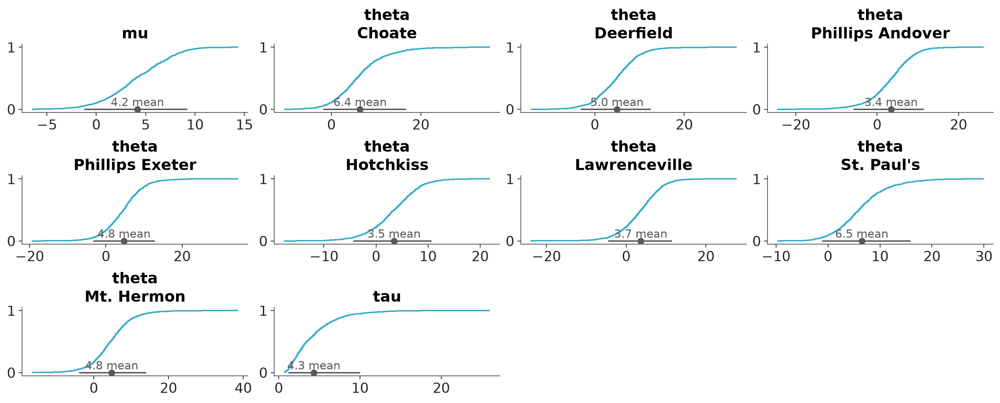
Faceted ECDF plots for 1D marginals of the distribution.

Faceted histogram plots for 1D marginals of the distribution. The point_estimate_text option is set to false to omit that visual from the plot.

KDE plot of the variable mu from the centered eight model. sample_dims restricts the KDE computation to the draw dimension only.
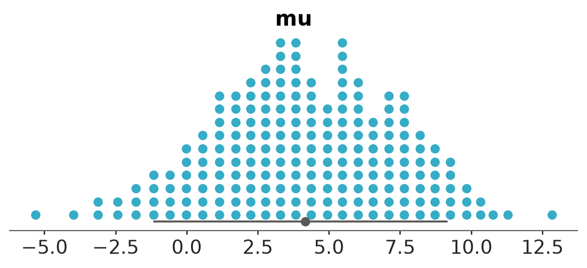
Quantile dot plot of the variable mu from the centered eight model. The point estimate text is removed and the number of quantiles is changed to 200.

Default forest plot with marginal distribution summaries.
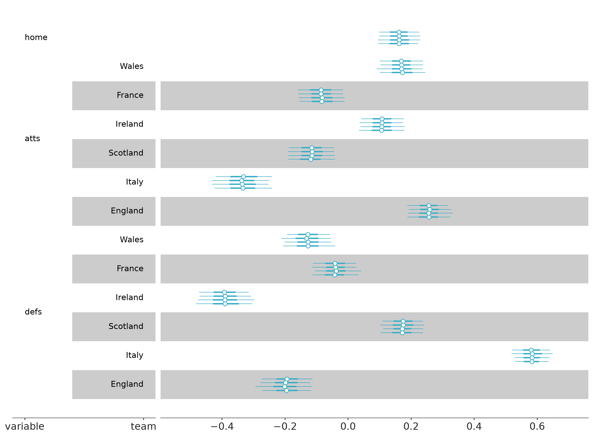
Forest plot marginal summaries with row shading to enhance reading.

Plot prior and posterior marginal distributions.

Plot one variable against other variables in the dataset.
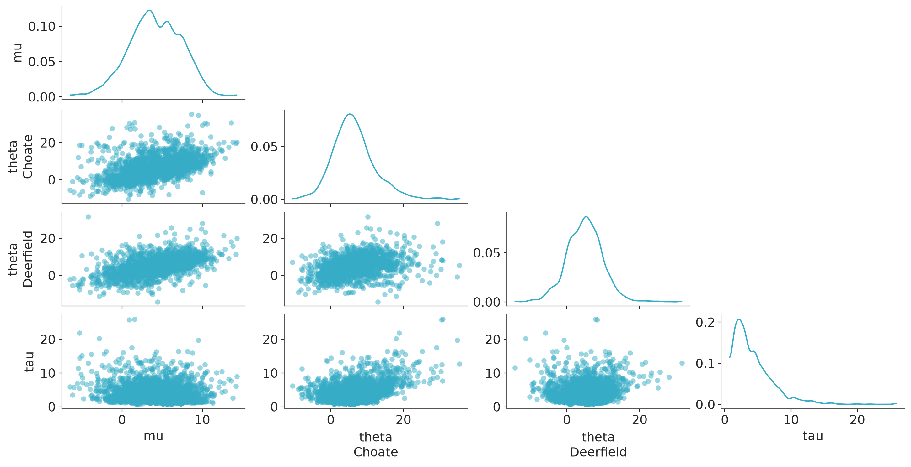
Plot all variables against each other in the dataset.

Visual representation of marginal distributions over the y axis for a single model.

Diagnostics for assessing the goodness-of-fit of estimated distributions to the underlying data using the Probability Integral Transform (PIT) and the Δ-ECDF-PIT plots.

Diagnostics for assessing the goodness-of-fit of estimated distributions to the underlying data using the Probability Integral Transform (PIT) and the Δ-ECDF-PIT plots.

Full marginal distribution comparison between different models.
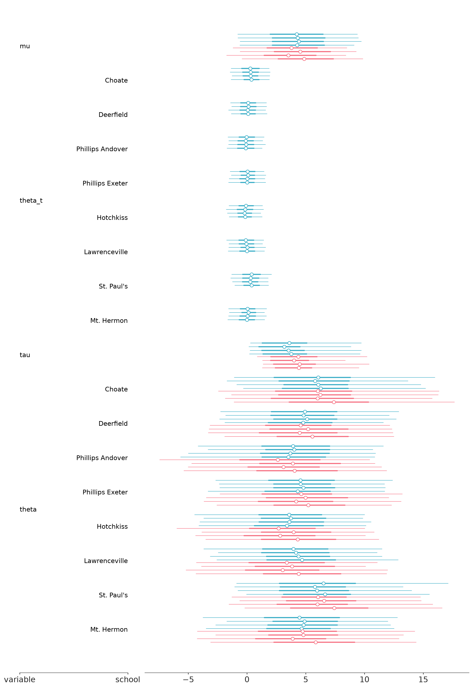
Forest plot summaries for 1D marginal distributions.

Visual representation of marginal distributions over the y axis for multiple models.
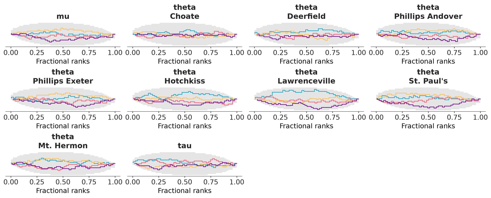
Faceted plot with fractional ranks for each variable.

Faceted plot with MCMC traces for each variable.
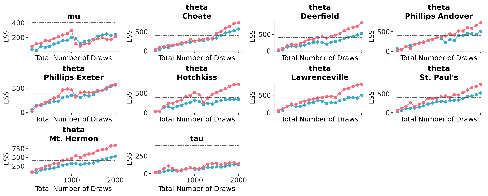
Faceted plot with ESS "bulk" and "tail" for each variable.
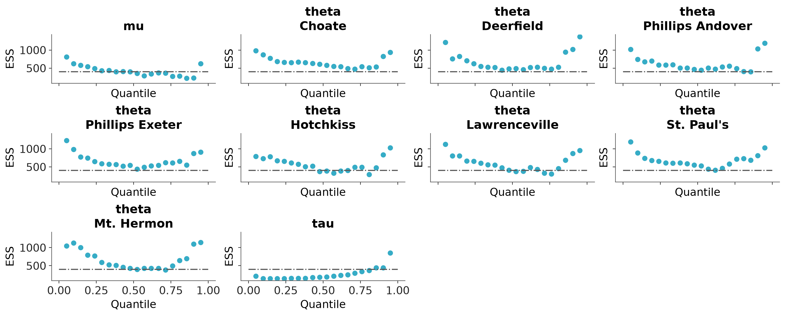
Faceted quantile ESS plot.

Full ESS (either local or quantile) comparison between different models.
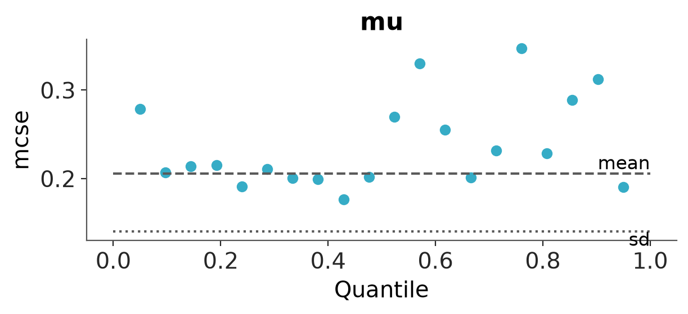
Faceted quantile MCSE plot.
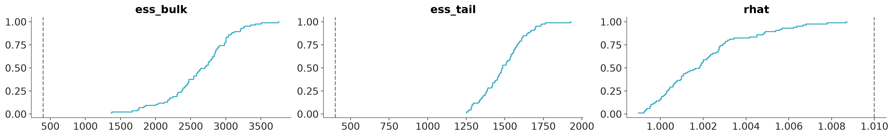
Plot the distribution of ESS and R-hat.

Faceted plot with autocorrelation for each variable.

Plot transition and marginal energy distributions.
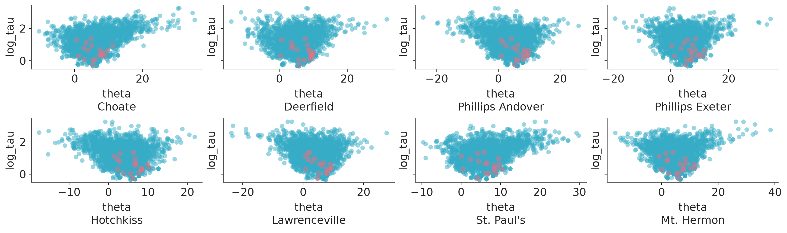
Plot one variable against other variables in the dataset.
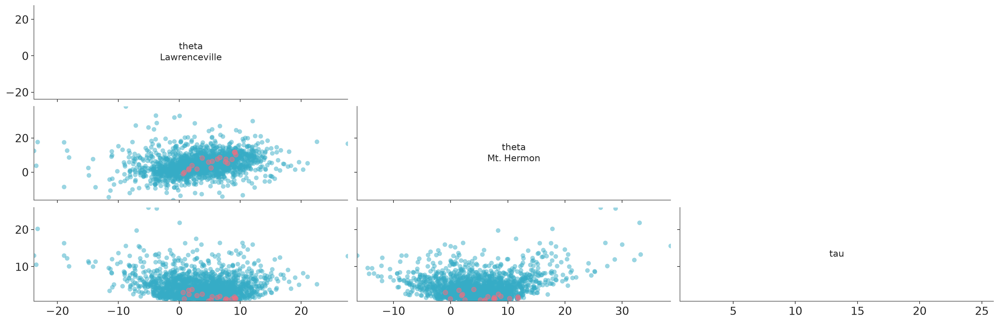
Plot all variables against each other in the dataset.
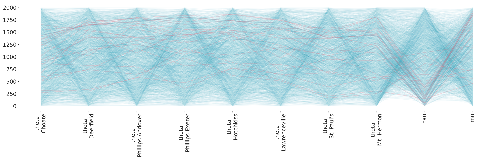
Plot parallel coordinates plot showing posterior points with divergences.

Posterior predictive and mean plots for regression-like data. plot_lm visualizes credible intervals around predictions alongside observed data points.

Plot of samples from the posterior predictive and observed data.

Rootogram for the posterior predictive and observed data.
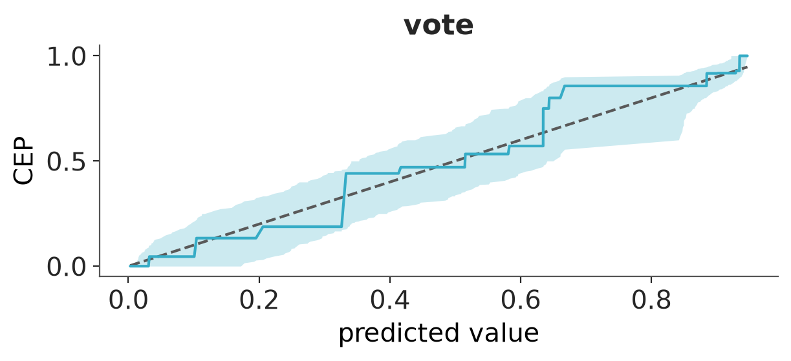
PAV-adjusted calibration plot for binary predictions.
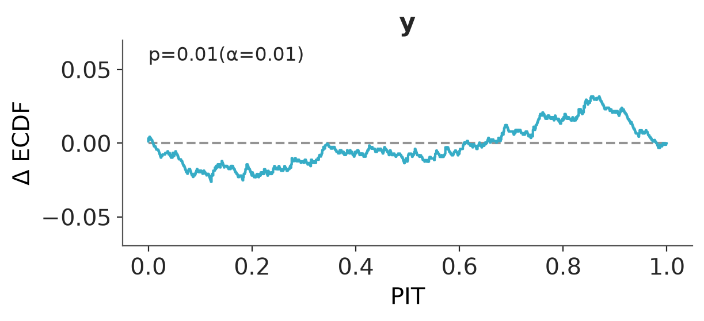
Plot of the probability integral transform of the posterior predictive distribution with respect to the observed data.
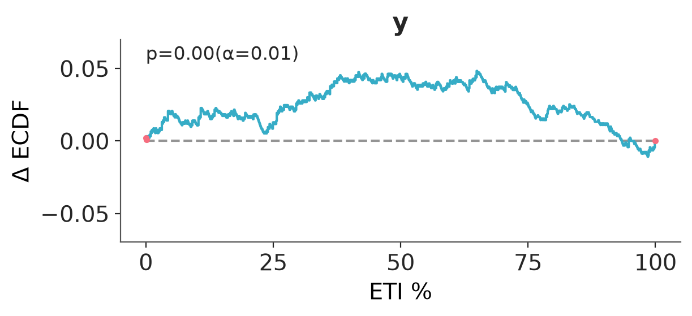
Proportion of true values that fall within a given prediction interval.

Plot of the probability integral transform of the posterior predictive distribution with respect to the observed data using the leave-one-out (LOO) method.
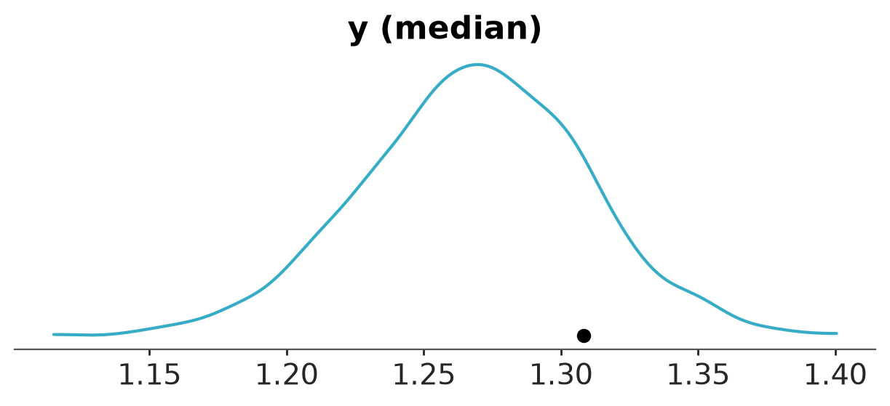
T-statistic for the observed data and posterior predictive data.

Plot posterior predictive point estimate and intervals at each observation.
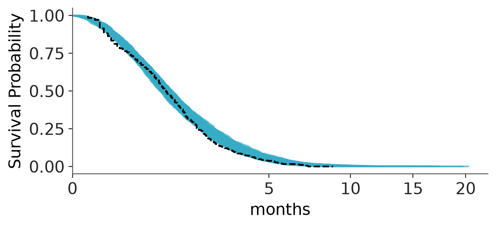
Plot Kaplan-Meier survival curve vs posterior predictive draws.
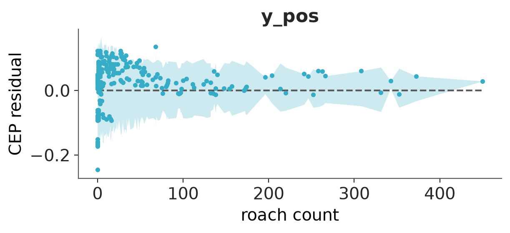
Residual plot using PAV-adjusted calibration for binary predictions.

Plot LOO posterior predictive point estimate and intervals at each observation.

Plot of the ECDF (right) of the PIT values (left) for samples from the posterior predictive and observed data.
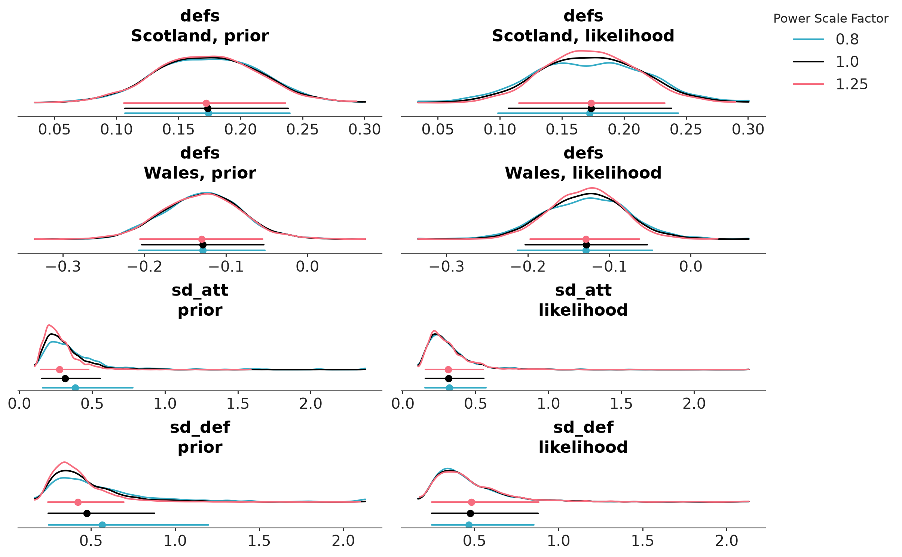
The posterior sensitivity is assessed by power-scaling the prior or likelihood and visualizing the resulting changes. Sensitivity can then be quantified by considering how much the perturbed posteriors differ from the base posterior.
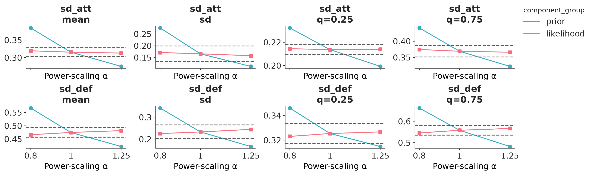
The posterior quantities are computed by power-scaling the prior or likelihood and visualizing the resulting changes. Sensitivity can then be quantified by considering how much the perturbed quantities differ from the base quantities.

Compare multiple models using predictive accuracy estimated using PSIS-LOO-CV. The mc argument is generated using PosteriorStats.compare.

Default Pareto k diagnostic plot from PSIS-LOO-CV to assess importance sampling reliability.
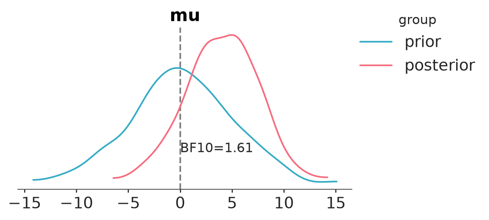
Compute the Bayes factor using the Savage-Dickey ratio.

Faceted plot with PIT Δ-ECDF values for each variable.
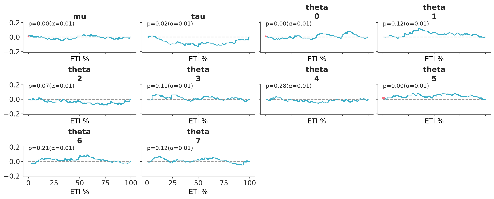
Coverage refers to the proportion of true values that fall within a given prediction interval. For a well-calibrated model, the coverage should match the intended interval width. For example, a 95% credible interval should contain the true value 95% of the time.

Two column layout with marginal distributions on the left and fractional ranks on the right.

Two column layout with marginal distributions on the left and MCMC traces on the right.

Arrange three diagnostic plots (ESS evolution plot, rank plot, and autocorrelation plot) in a custom column layout.